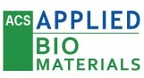

Publications

Environmental drivers of dissolved organic matter composition across central European aquatic systems
Water Research
2025
Novel correlation-based machine learning model integrating FT-ICR MS data to predict DOM composition and identify key environmental drivers.
Dissolved Organic Matter
FT-ICR MS
Machine Learning
Environmental Drivers
Measuring and predicting the ζ-potential of anthropogenic TiO₂-nanoparticles in surface waters
Environmental Science: Nano
2025
Novel approach for determining and predicting the ζ-potential of nanoparticles in surface waters using XGBoost models and in-situ exposure methods.
TiO₂ Nanoparticles
ζ-potential
XGBoost
Surface Waters

Imaging Keratan Sulfate in Ocular Tissue Sections by Immunofluorescence Microscopy and LA-ICP-MS
ACS Applied Bio Materials
2022
Advanced bioimaging workflow using immunofluorescence microscopy and LA-ICP-MS for spatial resolution of biomolecules.
Bioimaging
LA-ICP-MS
Tissue Analysis